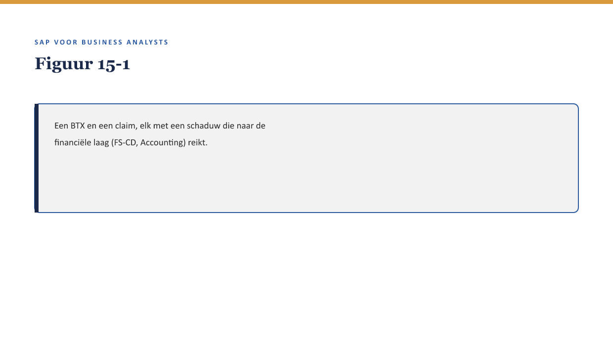
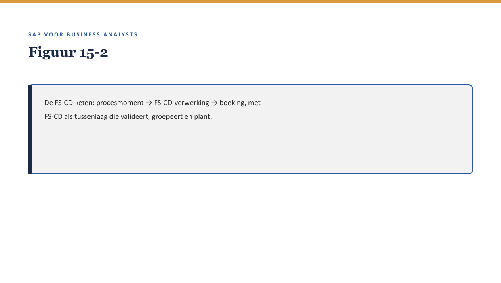

Deel 15 — De financiële schaduw van elk proces
Slidedeck · Niveau 2 Professional · Cursus SAP voor Business Analysts · Ductus
Slidetypen: titleSlide, sectionSlide, bulletsSlide, statementSlide, quoteSlide, tableSlide, figureSlide, opdrachtSlide.
Slide 1 — titleSlide
De financiële schaduw van elk proces Deel 15 · Niveau 2 Professional · Cursus SAP voor Business Analysts
Slide 2 — quoteSlide
“Elke BTX, elke claim — ze hebben allemaal een financiële schaduw.” — Priya Chandra
Slide 3 — figureSlide

Slide 4 — bulletsSlide
Wat we vandaag doen
- FS-CD-keten
- Universal Journal
- Account determination
- Eerste IFRS17/FPSL-lens
Slide 5 — figureSlide

Slide 6 — sectionSlide
Account determination
Slide 7 — figureSlide

Slide 8 — statementSlide
Het werkgeversduplicaat uit deel 4.
Wat gebeurt hiermee bij account determination?
Slide 9 — opdrachtSlide
Opdracht 15.3 — Account determination en het duplicaat
Beschrijf hoe het duplicaat een probleem had kunnen veroorzaken.
Slide 10 — sectionSlide
Eerste IFRS17/FPSL-lens
Slide 11 — quoteSlide
Wat betekent dit voor de boeking, en verandert de rapportagevraag van de business daardoor? — Kernzin, reader §6
Slide 12 — opdrachtSlide
Opdracht 15.4 — De lens toepassen
Kies een BTX-categorie, formuleer een vraag aan finance.
Slide 13 — bulletsSlide
Samenvatting in vijf zinnen
- Elke BTX en claim heeft een financiële schaduw via FS-CD naar Accounting
- De Universal Journal maakt rapportage sneller en completer
- Account determination kiest automatisch een grootboekrekening — en kan een stamgegevensfout financieel manifesteren
- Eerste IFRS17/FPSL-lens: wat betekent dit voor de boeking?
- De tweede lens (rapportagevraag) volgt in deel 21, samengebracht in deel 27
Slide 14 — titleSlide
Volgende deel Documenten & documentflow Deel 16